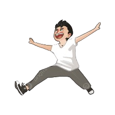
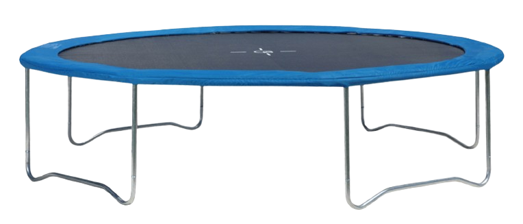

Petunjuk:
1️⃣ Klik "Mulai Lompat"
2️⃣ Manusia akan melompat berkali-kali di atas trampolin
3️⃣ Amati bagaimana pegas trampolin bekerja


🏀 Trampolin (Pegas)
Lompatan:
0
0%
Hasil Pengamatan:
Klik "Mulai Lompat" untuk melihat gaya pegas bekerja!
📚 Penjelasan:
Gaya pegas adalah gaya yang ditimbulkan oleh benda elastis seperti pegas atau karet yang direngangkan. Ketika manusia melompat di atas trampolin, kain trampolin dan pegas-pegasnya akan meregang (tertekan). Kemudian pegas akan kembali ke bentuk semula dan mendorong manusia ke atas. Inilah yang menyebabkan pantulan!